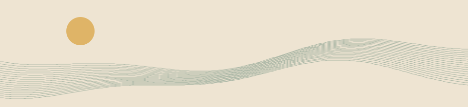
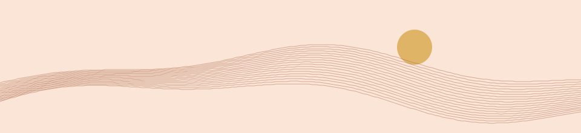

SUTI.care ∴ атлас взаимной заботыкак беречь друг друга
начать можно так: «тебе помочь, побыть рядом или дать тишину?» любой ответ годится. для помощи не нужно вступать в круг.

две роли на сегодня
ДСО фламинго · беречь пространство
замечает, кому трудно включиться, оставляет свободное место, спрашивает прежде, чем действовать. например: «оставить для тебя стул у выхода?»
Финисты · дать начало
предлагают маленькую пробу и доводят её до понятного конца. например: «я могу принести чай к четырём. кому удобно?»
роли выбирают по призванию, без привязки к полу или возрасту. сегодня можно хранить тишину, завтра начать дело, а в другой день просто получить заботу.

семейный путь · от замысла до восхождения
0+ — совместная история в присутствии близкого взрослого. «маленький Велес», «князь», «царевич» — имена игровых ролей для любого ребёнка. взрослый отвечает за безопасность и сам организует помощь.
- замысел. кому хочется сделать день теплее?
- план. выбери одно дело по силам: нарисовать открытку, освободить место, позвать взрослого.
- порог. спроси: «хочешь?» если нет — можно остановиться.
- дело. сделайте вместе только то, о чём договорились.
- след. спросите: «так подошло?» ответ может удивить.
- восхождение. назовите, чему научились. затем отдыхайте. здесь никто не получает звание выше другого.

как собрать свой круг
первая встреча · пример на 10 минут
каждый может сказать «мне нужно…», «могу предложить…» или пропустить круг. договоритесь об одном деле: кто берётся, кому оно нужно, когда спросить о результате. имена и контакты передавайте только с разрешения.
если силы закончились
«сегодня не потяну. могу отменить или передать дело с твоего разрешения». помощь можно завершить без объяснения личных причин.
ангелы заботы · как работает сеть
сеть начинается с двух людей. один говорит, что нужно, другой называет, что может. знакомить их дальше можно только по их желанию.
когда трудно попросить
можно начать с одного слова: «еда», «дорога», «разговор». тот, кто услышал, уточняет: «помочь сегодня или договориться на завтра?» не проси рассказать всю историю.
семья · от мала до велика
ребёнок может выбрать открытку или сказать «побудь со мной». взрослый помогает организовать дело. если пожилому человеку трудно читать с экрана, предложи прочитать вслух. не отвечай за него и не меняй его слова.
соседи · помощь рядом
«в четверг иду в магазин. принести что-нибудь?» согласуйте список, время и удобное место. если не можешь прийти, предупреди — человек сможет выбрать другой вариант.
друзья · после трудного дня
«хочешь поговорить, вместе помолчать или побыть одному?» позже можно один раз спросить, стало ли легче. отсутствие ответа не разрешает пересылать чужую историю в общий чат.
8D · когда одного круга мало
предложи подключить ещё одного человека: «кому можно рассказать, что именно и зачем?» на нейровече отделите известное от догадок, запишите один посильный шаг и кто за него берётся. это способ договориться, а не автоматическая рассылка запросов.
Virenium · открыть личную мастерскую
спасибо за внимание. иногда весь сегодняшний дар — вовремя услышанное «не сейчас».
вернуться к личной карте